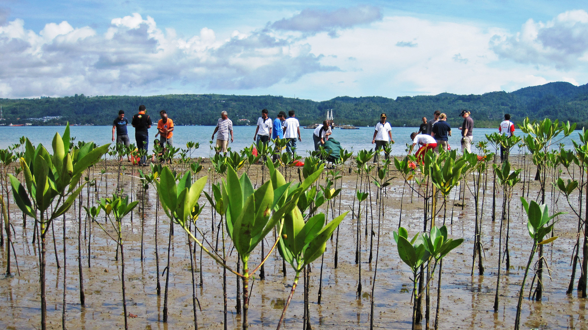

Mitigation and Success Stories

Mangrove Restoration
Mangroves act as natural barriers protecting Goa from storm surges and erosion.

Sustainable Coastal Management
Eco-friendly coastal protection measures can preserve both nature and livelihoods.